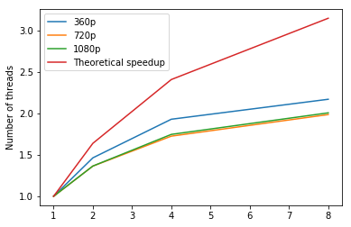
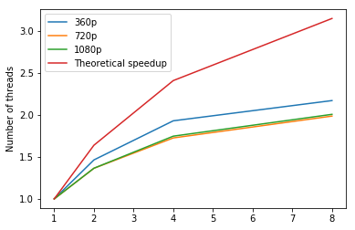

Evaluation Data & Platform
Any online video and any two consecutive images can be used as test data for our model. Please see our GitHub README for details if you want to prepare your data with your own video.
We evaluated our implementations with the sample video downloaded online (Bunny and NYC). The frames of videos (360p, 720p, 1080p) can be extracted with FFmpeg and the pairwise matches (360p, 720p, 1080p) can be generated using our helper script (HPC-ready). We generated both forward and backward flows for videos since both applications we presented use them. Therefore, if we have N frames in a video, we need to generate (N-1)*2 flows. We use Odyssey to generate matches.
For evaluating DeepFlow between two images, we generate forward flow between first two frames of the above videos (so we have 360p, 720p and 1080p images). The command is:
time ./deepflow2 out/frame_000001.ppm out/frame_000002.ppm flow.flo -match match/forward_1_2.match
For evaluating DeepFlow for processing videos, except MapReduce, we process pair by pair serially using a bash script. The accumulated time will be outputed on terminal. Since we know the time cost increase linearly as the video length increases by theory, we only report the average per second video processing time. Since all our video are with 25fps, that's the time to generate 50 flows (For 1-second length video, it's actually 48 flows. But with a video long enough, that's 50 flows per second on average). For videos of 360p, we run for 101 frames (the accumulated time divided by 4 is the average per second time). For video with 720p and 1080p, we run for 26 frames (the accumulated time is the average per second time). The command is:
bash video_flow.sh
To make fair comparison, we use AWS m4.2xlarge for all experiments except OpenACC (where we use AWS g3.4xlarge). The reason we don't use Odyssey is that it doesn't provide some necessary libraries and we don't have privilege to install them. Except MapReduce (where we use emr-5.13.0), we use Ubuntu Server 16.04 LTS (HVM) (ami-4e79ed36) as the operating system. All of original implementation and our implementations uses -O3 compile flag and default DeepFlow parameters.
A more detailed guide is provided in our GitHub README if you want to reproduce our test result.
Serial
The table below shows the processing time for a pair of images. "SOR Serial Optimized" is the original implementation. The optimization stands for serial optimization which reduces the number of calculations.
| 360p Images | 720p Images | 1080p Images | |
|---|---|---|---|
| SOR Serial | 6.494 seconds | 26.997 seconds | 59.326 seconds |
| SOR Serial Optimized | 4.598 seconds | 19.382 seconds | 42.582 seconds |
| Jacobi Serial | 3.870 seconds | 16.574 seconds | 35.765 seconds |
| Red-Black SOR Serial | 3.687 seconds | 15.812 seconds | 34.476 seconds |
From SOR to Jacobi or Red-Black SOR, we removed dependencies inside the big iteration (so iterations inside the big iteration becomes independent). With -O3 flag, compilers can probably optimize our code more. Therefore, it's not surprising that our Jacobi and Red-Black SOR is faster than even the optimized SOR. However, as discussed in the design page, the result of Jacobi is pretty different from the original implementation, which indicates Jacobi is probably not good to use. Further considering that Red-Black SOR is faster than Jacobi, we have totally no reason to use it. Before we came up with Red-Black SOR, we implemented the OpenMP and OpenACC versions of Jacobi. However, we didn't evaluate them due to the reason stated.
We also shows the video result below:
| 360p Video | 720p Video | 1080p Video | |
|---|---|---|---|
| SOR Serial | 323 seconds | 1316 seconds | 2950 seconds |
| SOR Serial Optimized | 226 seconds | 926 seconds | 2129 seconds |
| Jacobi Serial | 192 seconds | 788 seconds | 1791 seconds |
| Red-Black SOR Serial | 183 seconds | 752 seconds | 1725 seconds |
Just by replacing original SOR solver with Red-Black SOR, we achieved 1.235 speedup. All parallel implementations below are based on the serial version of Red-Black SOR, and we choose the serial Red-Black SOR result as the baseline.
OpenMP
The following two tables show the OpenMP result.
| 360p Images | 720p Images | 1080p Images | |
|---|---|---|---|
| 1 thread (serial) | 3.687 seconds | 15.812 seconds | 34.476 seconds |
| 2 threads | 2.518 seconds | 11.588 seconds | 25.253 seconds |
| 4 threads | 1.910 seconds | 9.160 seconds | 19.730 seconds |
| 8 threads | 2.048 seconds | 9.171 seconds | 19.883 seconds |
| 8 threads on m4.4xlarge | 1.698 seconds | 7.959 seconds | 17.174 seconds |
To our surprise, the 8-thread result is worse than the 4-thread result. We investigated this and found we only have 4 actual cores in m4.2xlarge nodes (2 threads per core due to hyper-threading). This means if we have 2 threads in a core, the 2 threads will both slow down due to resources sharing. To show the general trend, we also tested on m4.4xlarge nodes where 8 cores (16 threads) are available. The result is normal (slightly faster than 4-thread).
| 360p Video | 720p Video | 1080p Video | |
|---|---|---|---|
| 1 thread (serial) | 183 seconds | 752 seconds | 1725 seconds |
| 4 threads | 102 seconds | 414 seconds | 1004 seconds |
(Since testing on video is really time consuming, we only test with OMP_NUM_THREADS=4 as this performs best on m4.2xlarge node for 2 images)
The following plot shows the speedup for DeepFlow between two images. The left one is the speedup plot for m4.2xlarge node, the right one is replacing the 8-thread result by the 8-thread result on m4.4xlarge (taking out the hyper-threading factor). The right plot should represent the general trend.
 

The following plot shows the improvement of OpenMP on video:
MPI
| 360p Images | 720p Images | 1080p Images | |
|---|---|---|---|
| MPI with 3 threads | 9.398 seconds | 37.481 seconds | 88.902 seconds |
| MPI with 4 threads | 7.654 seconds | 30.553 seconds | 73.249 seconds |
| MPI with 5 threads | 6.759 seconds | 27.357 seconds | 70.386 seconds |
| MPI with 6 threads | 6.182 seconds | 27.802 seconds | 62.604 seconds |
| MPI with 7 threads | 5.857 seconds | 23.765 seconds | 54.823 seconds |
| MPI with 8 threads | 5.577 seconds | 23.662 seconds | 53.392 seconds |
| MPI with 16 threads | 7.804 seconds | 31.968 seconds | 72.716 seconds |
We implement MPI and run our model on 2 instances, i.e 2 CPUs, and the maximum number of threads now is 16, since each m4.2xlarge provides 8 threads. But since m4.2xlarge only provides 4 actual core, the performance of MPI with 16 threads is worse than one with 8 threads, which agrees with the result of previous OpenMP.
Although performance increases with the number of threads, MPI still works really bad, even worse than serial programming, which is no surprise, since messages passing between nodes are huge and frequent due to frequent call of Red-Black SOR, so that overhead is pretty large. Notice that we are not dealing with a single matrix and perform Red-Black SOR on it. Instead, we are dealing with multiple matrices with different sizes, so that every time we call Red-Black SOR, we need to reassign jobs to different nodes and those nodes send and receive messages, and that is how overhead accumulates.
MPI+OpenMP
| 360p Images | 720p Images | 1080p Images | |
|---|---|---|---|
| MPI with 3 threads+OpenMP with 4 threads | 7.133 seconds | 28.026 seconds | 69.213 seconds |
| MPI with 4 threads+OpenMP with 4 threads | 6.077 seconds | 26.488 seconds | 67.775 seconds |
| MPI with 5 threads+OpenMP with 4 threads | 8.428 seconds | 29.043 seconds | 64.877 seconds |
We also implement MPI with OpenMP. As we can see, the performance is better than MPI's but still worse than serial. The reasons are the same as MPI case. We therefore conclude that MPI does not fit this problem.
OpenACC
Since PGCC does not support v4sf type, we rewrote the code. However, this will make the serial part of our code slower.
| 360p Images | 720p Images | 1080p Images | |
|---|---|---|---|
| OpenACC | 3.737 seconds | 16.499 seconds | 28.385 seconds |
The CPU serial execution time is similar on g3.4xlarge node and m4.2xlarge node. We see compared to serial version, OpenACC is slower on 360p and 720p images and slightly faster on 1080p images. We think the reason is (1) the v4sf workaround mentioned above slows down the performance. (2) Our matrices are not big enough so the memory copy overhead plays an important role. This also explains why for 1080p images, OpenACC will have better performance.
According to the two-image result, we conclude OpenACC is not a good choice for DeepFlow parallelization. So we didn't evaluate OpenACC on video tasks.
MapReduce + OpenMP
MapReduce can only be applied to video tasks
Note: We called Amazon and they don't agree to increase our m4.2xlarge instances limit to 9. So the 8-node result is actually 4 m4.2xlarge instances and 4 r4.2xlarge. r4.2xlarge is the most similar instance with m4.2xlarge we can find and it's slightly more powerful than m4.2xlarge.
From the OpenMP result, we know 4 thread is the best. So we set OMP_NUM_THREADS=4 as environment when running the OpenMP implementation. As a further trick to speedup the execution, we assign a pair of images to each worker node and run forward and backward flow simultaneously. Thus using OpenMP implementation as baseline, the ideal speedup would be 2 * #Nodes
| 360p Video | 720p Video | 1080p Video | |
|---|---|---|---|
| Serial | 183 seconds | 752 seconds | 1725 seconds |
| OpenMP | 102 seconds | 414 seconds | 1004 seconds |
| 2 nodes | 159 seconds | 280 seconds | 556 seconds |
| 4 nodes | 83 seconds | 193 seconds | 307 seconds |
| 8 nodes | 48 seconds | 112 seconds | 147 seconds |
The following plot shows the speedup using serial version as the baseline.
As shown in the figure, the speedup increase is quite linear. Due to the issue we mentioned before (r4.2xlarge is slightly more powerful than m4.2xlarge), from 4 nodes to 8 nodes, the speedup grows faster (without the issue, we expect linear speedup increase).
Since there are overheads like HDFS file copys in MapReduce, and those overheads are approximately constants. By theory, when more fraction of the time are spent in flow calculation, we will have a higher speedup. Therefore, we observe in the above plot that 360p video has the worst speedup while 1080p video has the best speedup.